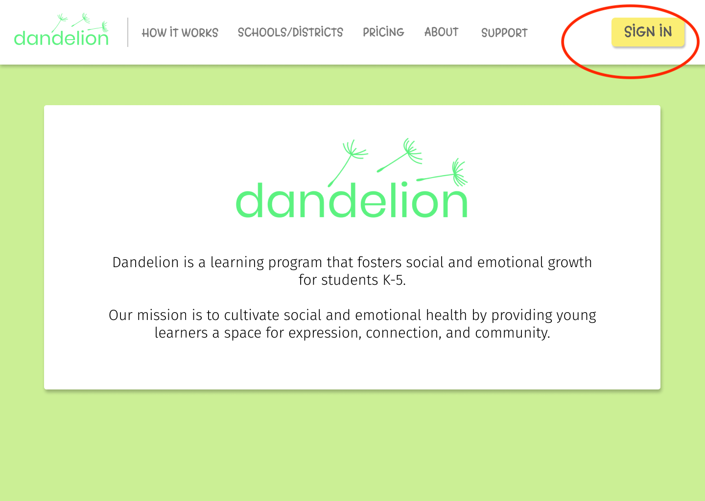
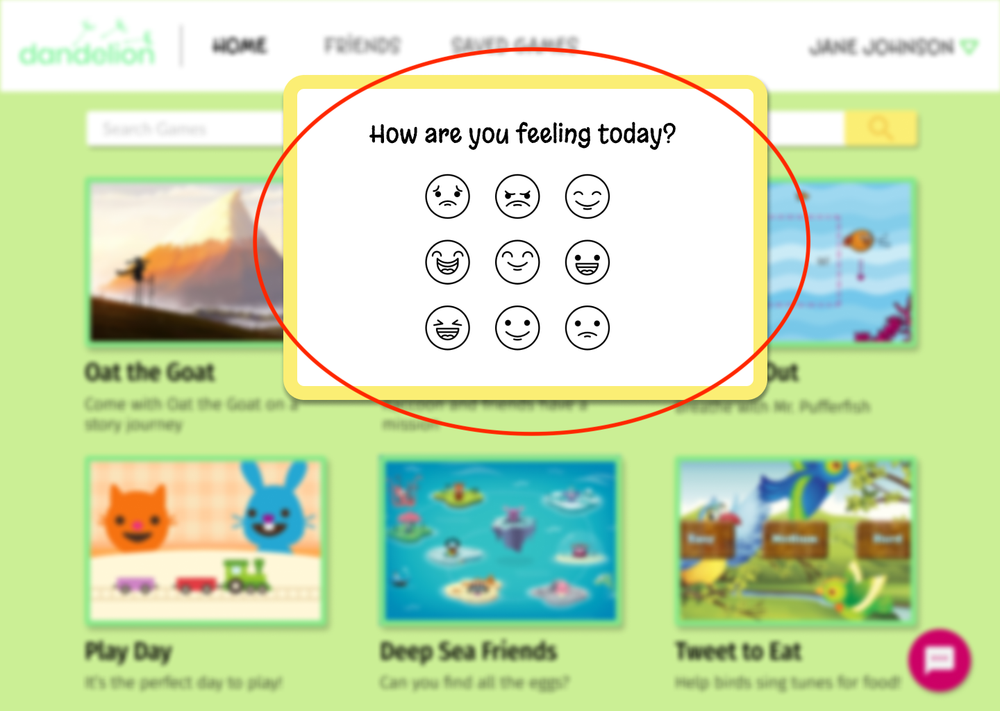
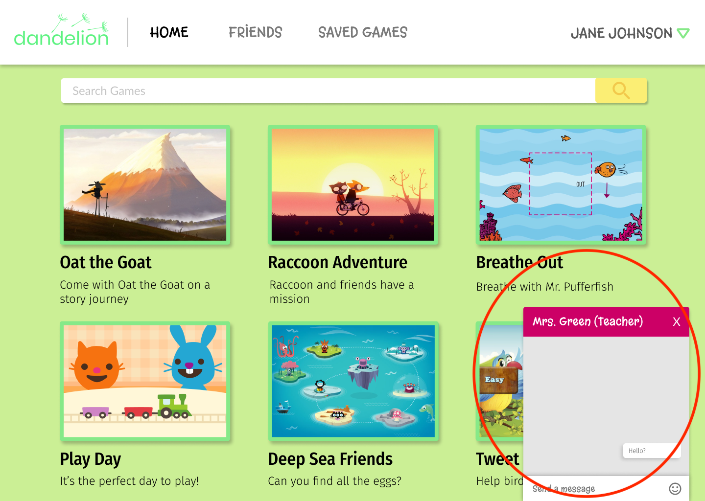
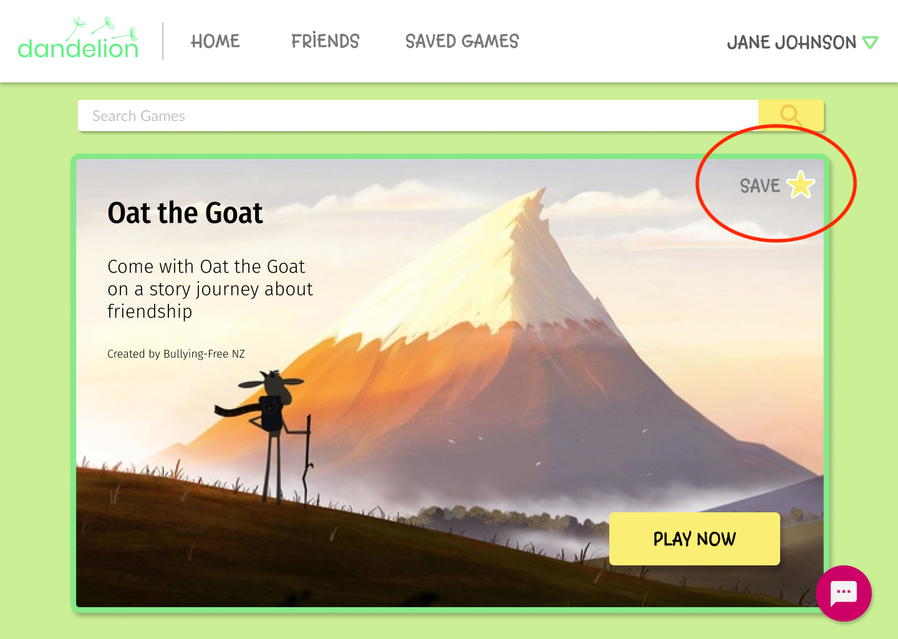
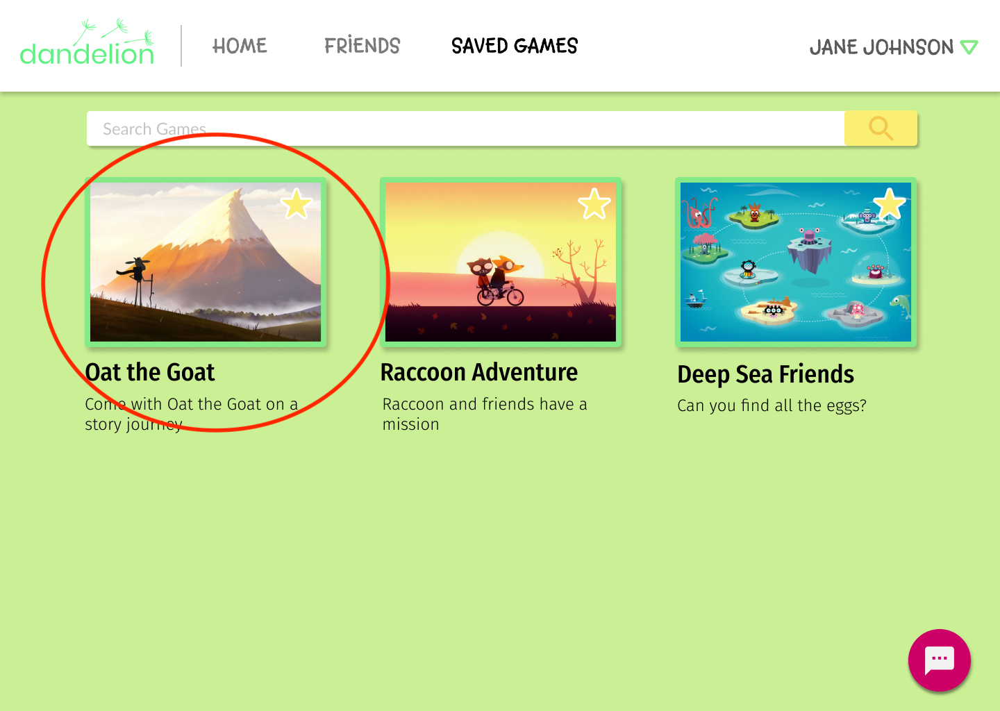
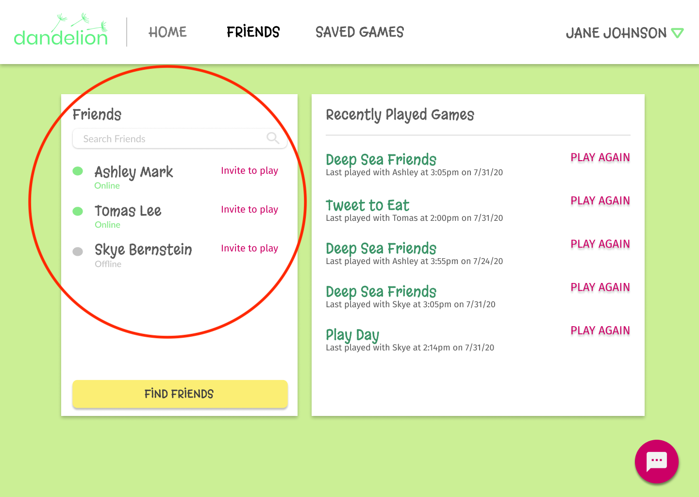

June 2020 - August 2020
Team Lead, UX Designer
Georgina Scoville, Jesse Hagy, Agnes Tang, Angelina Wang
Figma, Pen and paper
This summer, I joined ORIGIN, an entrepreneurship program for undergraduate students who want to learn what it takes to start a company. Together, my team of five created Dandelion, a company that focuses on the social and emotional development of students K-5. Although Dandelion is not a real company, our whirlwind eight weeks showed us what it was like to go from ideation to product demonstration.
My team was split into two parts: technical and business. As team lead I oversaw both sides, but focused mainly on the technical aspects of our prototype.
We sought to address one of the UN's sustainable development goals: quality education. Since the COVID-19 pandemic, schools across the country shut down and students suddenly had to start remote learning.
Twenty-four user interviews later, we realized that teachers were struggling to provide for students' social and emotional well-being. Young students would arrive on Zoom, sleepy, bored, late, and overall not in the right mindset to learn.
After conducting our user interviews, we got to work sketching a user flow and first Figma drafts. We wanted our site to be fun and geared towards kids, so we chose fonts and a color scheme accordingly.
Through Zoom, we tested the site on elementary students to see how they would react.
Some things we learned:
We presented our Pitch Deck and prototype demonstration to a judge.
Landing page with signin button
After signing in, mental state check-in
Chat function in bottom right
Save games to play again later
Find all saved games
Ask friends to play with you!
We planned and brainstormed a lot before jumping to the fun stuff. That process is crucial!
I recognized that we all work at different paces. We were ready to adjust if we tweaked our product vision, and we had each others' backs when interviewees were unavailable at the last minute.
We kept asking ourselves, "Is this meeting the teacher's needs? How will this help the students? What features can we come up with?" Design with the mission in mind!